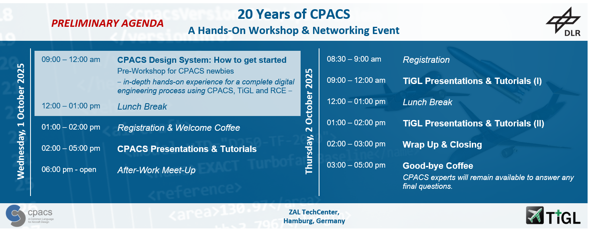

To celebrate the 20th anniversary of CPACS, we are inviting researchers and engineers from industry, small-and medium-sized companies, research organisations, academia and think-tanks to join our event to:
- get exciting insights into both, the history and current developments of CPACS and the connected TiGL geometry software
- receive hands-on tutorials and support during practical exercises
- have great networking opportunities and gain new inspiration
A pre-workshop for CPACS-newbies like students and young professionals will take place in the morning, offering in-depth hands-on experience of a digital engineering process using the CPACS Design System. This includes the CPACS data model, TiGL, and the Remote Component Environment (RCE).
If multidisciplinary design-optimisation is at the core of your work – come and join us on 1-2 October 2025 at the ZAL in Hamburg: Register now!

CPACS in practice
If you are interested in learning how the CPACS Design System has been adopted in a European Clean Aviation project, we highly recommend registering for the preceding ODE4HERA workshop, taking place from 30 September to 1 October 2025 at ZAL Hamburg.